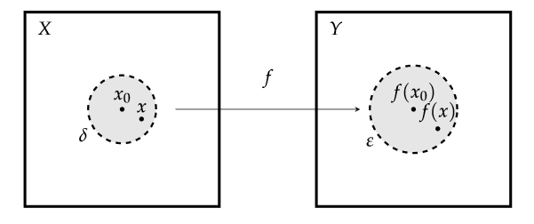

Chapter 2 - Metric Spaces
2.6 Convergence. Open and Closed Sets
Results
Open Ball
An open sphere/ball $S(x_0, r)$ is the set of points $x\in X$ satisfying the inequality:
$$
\rho(x_0, x) < r.
$$
where $\rho$ is a metric. The fixed point $x_0$ is the center of the sphere, and $r$ is the radius.
Closed Ball
An closed sphere/ball $S[x_0, r]$ is the set of points $x\in X$ satisfying the inequality:
$$
\rho(x_0, x) \leq r.
$$
where $\rho$ is a metric. The fixed point $x_0$ is the center of the sphere, and $r$ is the radius.
Contact Point and Closure
A point $x\in X$ is a contact point for a set $M\subset X$ if every neighborhood of $x$ (epsilon-ball around $x$)
contains at least one point of $M$. (For instance, the point 1 is a contact point for $(0,1)$).
The set of all contact points is called the closure of $M$ and denoted by $[M]$. For instance, $[(0,1)] = [0,1]$.
Theorem 1
The closure operator $[\cdot]$ has the following properties:
1) If $M\subset N$ then $[M]\subset[N]$
2) $[[M]] = [M]$
3) $[M\cup N] = [M]\cup[N]$
4) $[\emptyset] = \emptyset$
Convergence
A sequence $\{x_n\}$ in a metric space converges to a point $x\in X$ if every neighborhood $O_\eps(x)$
contains all points of the sequence after some $N\in\N$. The point $x$ is called the limit of the
sequence $\{x_n\}$.
Theorem 2
A necessary and sufficient condition for a point $x$ to be a contact point of a set $M$ is that there
exist a sequence $\{x_n\}$ of points of $M$ converging to $x$.
Theorem 2'
A necessary and sufficient condition for a point $x$ to be a limit point of a set $M$ is that there
exist a sequence $\{x_n\}$ of distinct points of $M$ converging to $x$.
Dense subset
Let $A$ and $B$ be two subsets of $X$. $A$ is dense in $B$ if $[A]\supset B$. And $A$ is said to be
dense everywhere if $[A] = X$.
(Example: $\Q$ is dense everywhere in $\R$.)
Definition
A metric space is said to be
separable if it has a countable everywhere dense subset.
Closed Sets
A subset $M$ of a metric space $(X,\rho)$ is
closed if it coincides with its own closure,
that is, $[M] = M$. Or in other words, it is closed if it contains all it's limit points.
Theorem 3
The intersection of an arbitrary number of closed sets is closed. The union of a
finite number of
closed sets is closed.
Open Sets
A point $x$ is called an interior point of a set $M$ if $x$ has a neighborhood $O_\eps(x)\subset M$, i.e.
it has a neighborhood consisting entirely of points of $M$. A set is said to be
open if all its
points are interior points.
Theorem 4
A subset $M$ of a metric space $(X, \rho)$ is open if and only if its complement $X-M$ is closed.
Corollary
The empty set $\emptyset$ and the whole space $X$ are open sets. (Note: they also satisfy the conditions
for being closed sets, so they are both).
Theorem 5
The union of an arbitrary number of open sets is open. The intersection of a
finite number of open sets is open.
Theorem 6
Every open set $G$ on the real line is the union of a finite or countable system of pairwise disjoint open intervals.
Corollary
Every closed set on the real line can be obtained by deleting a finite or coutnable system of pairwise disjoint
intervals from the line.
Continuity
Let $f$ be a mapping from $X$ to $Y$ (metric spaces). The function $f$ is continuous if for all $\eps > 0$ there exists
some $\delta > 0$ such that
$$
\rho(x_0, x) < \delta
\;\Longrightarrow\;
\rho'(f(x_0), f(x)) < \eps.
$$
Informally: Whenever we select an $x$ from within the $\delta$-ball in $X$, the mapping will lie inside the
$\eps$-ball in $Y$. Here is an illustration.

Problem 1
Give an example of a metric space $(X, \rho)$ and two open spheres $S(x, r_1)$ and $S(y, r_2)$ in $X$ such
that $S(x,r_1)\subset S(y, r_2)$ although $r_1 > r_2$.
Solution.
Let $X = U(1)\subset\R^2$ where $U(1)$ denotes the unit circle, i.e. the set $\{(x,y)\in\R\,|\, x^2 + y^2 < 1\}$.
The distance is the standard Euclidean metric:
$$
\rho(x,y) = \sqrt{x^2 + y^2}
$$
Now, select two points $x = y = (0,0)$, and set $r_1 = 2$ and $r_2 = 1$. Then $r_1 > r_2$, but
$S(x,r_1)\subset S(y, r_2)$. (The sets are restricted to a subspace, and in that subspace they are the same).
■
Problem 2
Prove that every contact point of a set $M$ is either a limit point of $M$ or an isolated point of $M$.
Proof.
By Theorem 2, for some contact point $y$ for $M$, there exists a sequence $\{x_n\}$ of points in $M$ that
converges to $y$. By the definition of convergence, for every epsilon-ball $O_\eps(y)$ there is some $N\in\N$
such that all points in $\{x_n\}$ after $x_N$ lie inside $O_\eps(y)$. There are two exhaustive possibilities,
1) Every $O_\eps(y)$ contains a single point, in which case $y$ is an isolated point.
2) Every $O_\eps(y)$ contains an infinite amount of points, in which case $y$ is a limit point.
■
Problem 3
Prove that if $x_n\rightarrow x$ and $y_n\rightarrow y$ as $n\rightarrow \infty$, then
$\rho(x_n, y_n)\rightarrow\rho(x, y)$.
Proof.
Using the identity from Problem 1 in section 2.5:
$$
|\rho(x, z) - \rho(y, u)| \leq \rho(x, y) + \rho(z, u).
$$
In our case, we set $x = x_n$, $z = y_n$, $y = x$ and $u = y$:
$$
|\rho(x_n, y_n) - \rho(x, y)| \leq \rho(x_n, x) + \rho(y_n, y).
$$
Taking the limit:
$$
\lim_{n\rightarrow\infty}|\rho(x_n, y_n) - \rho(x, y)| \leq \lim_{n\rightarrow\infty} \Big(\rho(x_n, x) + \rho(y_n, y)\Big) = 0
$$
Which leaves us with:
$$
\lim_{n\rightarrow\infty}|\rho(x_n, y_n) - \rho(x, y)| \leq 0
$$
which means $\rho(x_n, y_n)\rightarrow\rho(x, y)$ as $n\rightarrow\infty$.
■
Problem 4
Let $f$ be a mapping from one metric $(X,\rho)$ space to another $(Y,\rho')$, $f: X\rightarrow Y$. Prove that $f$ is continuous at a point $x_0$
if and only if the sequence $\{y_n\} = \{f(x_n)\}$ converges to $y = f(x_0)$ when $x_n\rightarrow x_0$.
Proof.
Showing implication both ways.
$\Rightarrow$) Assume $f$ is continuous at $x_0$: for any $\eps>0$ there exists some $\delta > 0$ such that
$\rho'(f(x), f(x_0)) < \eps$ when $\rho(x, x_0) < \delta$. Now we assume that $x_n\rightarrow x$, so for every $\eps > 0$
there exists some $N\in\N$ such that $\rho(x_n, x_0) < \eps$ when $n\geq N$.
$\Leftarrow$) Assume that $x_n\rightarrow x_0$ and that $f(x_n)\rightarrow f(x_0)$ as $n\rightarrow\infty$. By the definition
of convergence, then for any $\eps > 0$ we can find some $N_1\in\N$ such that $\rho(x_n, x_0) < \eps$ for all $n\geq N_1$.
By assumption we can also find some $N_2\in\N$ such that $\rho'(f(x_n), f(x_0)) < \eps$ whenever $n\geq N_2$. Now, set $\delta = \eps$.
Then, for any $\rho(x, x_0) < \delta$, then $\rho'(f(x_n), f(x_0)) < \eps$, which shows that $f$ is continuous on $x_0$.
■
Problem 5
Prove the statements.
a) The closure of any set $M$ is closed.
Proof.
Any closed set coincides with its closure, and since by Theorem 1, $[[M]] = [M]$, then $[M]$ is a closed set.
■
b) $[M]$ is the smallest closed set containing $M$.
Proof.
Assume $M$ is a closed set. Then $[M] = M$ which obviously is the smallest set containing $M$.
Now assume that $M$ is an open set. Let $C$ be some arbitrary closed set such that $M\subset C$. Assume $y\in[M]$,
then it is a limit point for $M$. Since $M\subset C$ and a closed set contains all its limit points, it follows that
$y\in C$, which shows that $[M]\subset C$. Since any closed set $C$ containing $M$ also contains $[M]$, it shows that
$[M]$ is the smallest closed set.
■
Problem 6
Is the union of infinitely many closed sets necessarily closed? How about the intersection of infinitely many
open sets? Give examples.
Proof.
The countable union of closed sets can be an open set, as shown in Problem 7, in section 1.1.
$$
\bigcup_{n=1}^\infty \left[a + \frac{1}{n}, b - \frac{1}{n}\right] = (a, b)
$$
And the countable intersection of open sets can be a closed sets, also shown in Problem 7.
$$
\bigcup_{n=1}^\infty \left(a - \frac{1}{n}, b + \frac{1}{n}\right) = [a, b]
$$
■
Problem 7
Prove directly that the point 1/4 belongs to the Cantor set, $F$, although it is not an end point of any of the open
intervals deleted in constructing $F$.
Proof.
As noted in the text, any $x\in[0,1]$ can be written in ternary notation:
$$
x = \frac{a_1}{3} + \frac{a_2}{3^2} + \ldots + \frac{a_2}{3^n} + \ldots,
$$
where $a_i$ can only take values $0, 1, 2$. The $x$ belongs to $F$ if and only if none of the $a_i$ equals 1.
If write 1/4 in this form it becomes:
$$
\frac{1}{4} = \frac{0}{3} + \frac{2}{3^2} + \frac{0}{3^3} + \frac{2}{3^4} + \frac{0}{3^5} + \frac{2}{3^6} + \ldots,
$$
or in decimal form:
$$
\frac{1}{4} = 0.0202020202\ldots
$$
Since there are no 1s, this shows that $1/4\in F$.
■
Problem 8
Let $F$ be the Cantor set. Prove the following.
(a) The points of the first kind;
$$
0, 1, \frac{1}{3}, \frac{2}{3}, \frac{1}{9}, \frac{2}{9}, \frac{7}{9}, \frac{8}{9},\ldots
$$
form an everywhere dense subset of $F$.
Proof.
■
(b) The numbers of the form $t_1 + t_2$, where $t_1,t_2\in F$, fill the whole interval $[0,2]$.
Proof.
■
Problem 9
Given a metric space $(X,\rho)$, let $A\subset X$ and $x\in X$. Then the number
$$
\rho(A, x) = \inf_{a\in A}\rho(a, x)
$$
is called the
distance between $A$ and $x$. Prove the following statements:
(a) $x\in A$ implies $\rho(A, x) = 0$, but not conversely.
Proof.
Assume $x\in A$. Since the distance is nonnegative, $\inf_{a\in A}\rho(a, x)\geq 0$
then $a = x$ so $\inf_{a\in A}\rho(a, x) = \rho(x, x) = 0$.
To show that the converse is not true consider the following counterexample.
Let $X = \R$, let $A = (0,1)$ and let $x = 1$. Then $x\not\in A$, but
for any $\eps > 0$ we can find some $a\in A$ such that $|a - 1| < \eps$, which means $\inf_{a\in A}\rho(a, x) = 0$.
■
(b) $\rho(A, x)$ is a continuous function of $x$ (for fixed $A$).
Proof.
■
(c) $\rho(A, x) = 0$ if and only if $x$ is a contact point of $A$.
Proof.
$\Rightarrow$) Assume $\rho(A, x) = 0$. Then for any $\eps > 0$, the point $O_\eps(x)$ will contain points
in $A$ and is therefore a contact point of $A$.
$\Leftarrow$) Assume $x\in A$ is a contact point. Assume further that $A$ is closed.
Then $x\in A$, since a closed point contains all its contact points. Then by (a),
the distance from $A$ to $x$ is 0. Assume now that $A$ is open. Let $x$ be a contact point. By definition,
for any $\eps > 0$ the ball $O_\eps(x)$ will contain points from $A$, so $\rho(A, x) < \eps$. Since
this is true for any $\eps > 0$, this means that $\rho(A, x) = 0$.
■
(d) $[A] = A\cup M$, where $M$ is the set of all points $x$ such that $\rho(A, x) = 0$.
Proof.
$\subset$) Assume $x\in[A]$. Since $[A]$ is closed it contains all its contact points, so $\rho(A, x) = 0$,
which means $x\in M \subset A\cup M$. Hence $[A]\subset A\cup M$.
$\supset$) Assume $x\in A$. Since $A\subset[A]$ then $x\in [A]$. Assume now that $x\in M$ and $x\not\in A$.
Then by definition of $M$, $\rho(A, x) = 0$ which means $x$ is a contact point for $A$ by (c), which also
means $x\in[A]$. It follows that $A\cup M\subset[A]$.
■
Problem 10
Let $A$ and $B$ be two subsets of a metric space $(X,\rho)$. Then the number
$$
\rho(A, B) = \inf_{a\in A, b\in B}\rho(a, b)
$$
is called the
distance between $A$ and $B$. Show that $\rho(A, B) = 0$ if $A\cap B\not=\emptyset$,
but not conversely.
Proof.
Let $x\in A\cap B$. Then by 9(a), $\rho(x, A) = 0$ and $\rho(x, B) = \rho(B, x) = 0$. From the triangle
inequality, $\rho(A, B) \leq \rho(A, x) + \rho(x, B) = 0 + 0 = 0$ which shows that $\rho(A, B) = 0$.
Showing that the converse is not true with a counterexample.
Let $X = \R$, let $A = (0,1)$ and let $B = [1, 2)$. Then as shown above, $\rho(A, 1) = 0$
and since $1\in B$, $\rho(A, B) = 0$.
■
Problem 11
et $M_K$ be the set of all functions $f$ in $C_{[a,b]}$ satisfying a
Lipschitz condition, i.e.
the set of all $f$ such that
$$
|f(t_1) - f(t_2)| < K|t_1 - t_2|
$$
for all $t_1,t_2\in[a,b]$, where $K$ is a fixed positive number. Prove the following statements.
(a) $M_K$ is closed and in fact is the closure of the set of all differentiable functions on $[a,b]$
such that $|f'(t)| < K$.
Proof.
■
(b) The set
$$
M = \bigcup_K M_K
$$
of all functions satisfying the Lipschitz condition for some $K$ is not closed.
Proof.
■
(c) The closure of $M$ is the whole space $C_{[a,b]}$.
Proof.
■
Problem 12
asd
Proof.
■